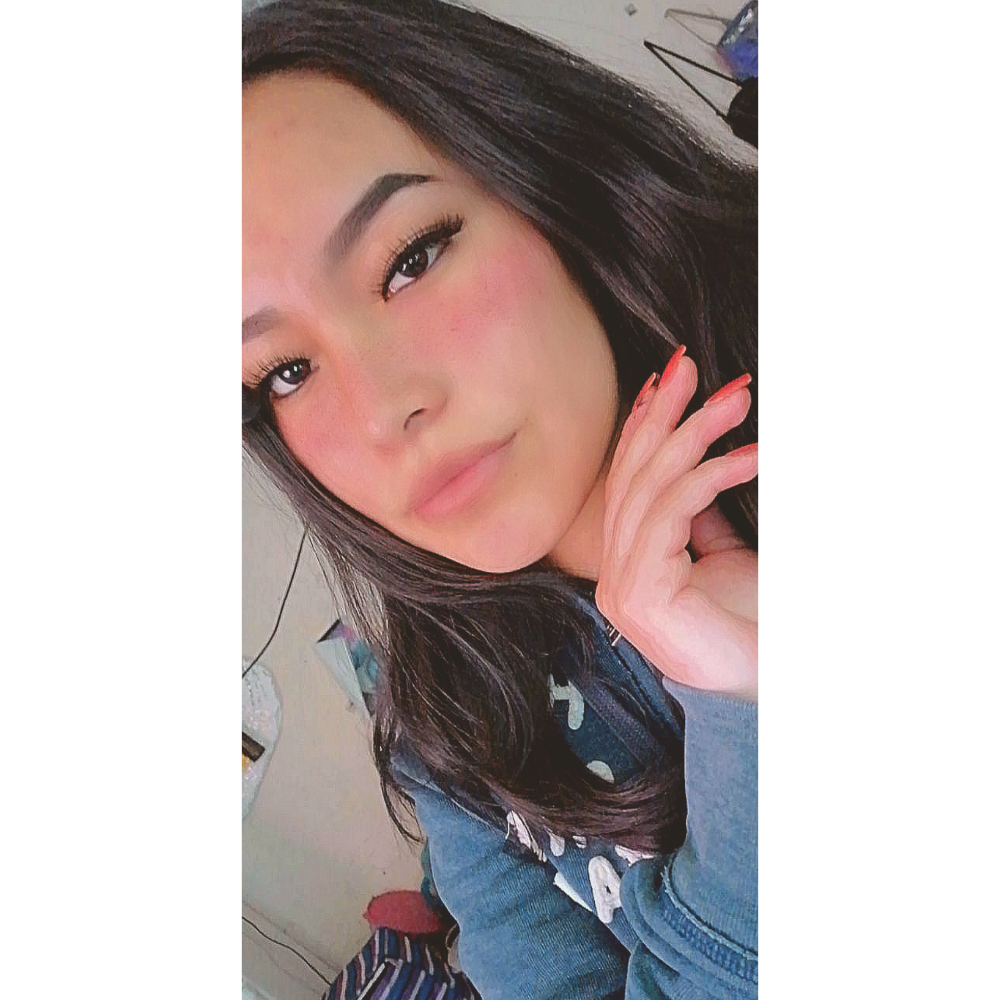
Maria Karen Bernal Esquivel
Imformacion Personal
Maria Karen Bernal Esquivel
estudie programacion en preparatoria, aprendi lo basico de html, css, php, y un poco de java.
Resumen profecional
Desarrollador web apasionado con experiencia en la creación y mantenimiento de sitios web dinámicos utilizando PHP y bases de datos. He diseñado y desarrollado una página web funcional, colaborando estrechamente con bases de datos para garantizar la eficiencia y seguridad de la información. Mi pasión por el diseño web me ha llevado a buscar oportunidades para expandir mis habilidades tanto en el frontend como en el backend. Actualmente, estoy comprometido a ampliar mis conocimientos en diseño web, así como en desarrollo backend y frontend, con el objetivo de ofrecer soluciones innovadoras y centradas en el usuario. Busco oportunidades que me permitan seguir aprendiendo y creciendo en el campo del desarrollo web
Educacion
Egresado de la preparatoria técnica con especialización en programación. Durante mi tiempo en la escuela, adquirí sólidos conocimientos en lenguajes de programación y desarrollo de software. Además, obtuve certificaciones en Java e inglés, lo que me ha proporcionado una base sólida tanto en programación orientada a objetos como en comunicación en un entorno global. Estoy comprometido a seguir desarrollando mis habilidades en programación y continuar mi educación en tecnología para contribuir de manera significativa en proyectos innovadores y desafiantes.
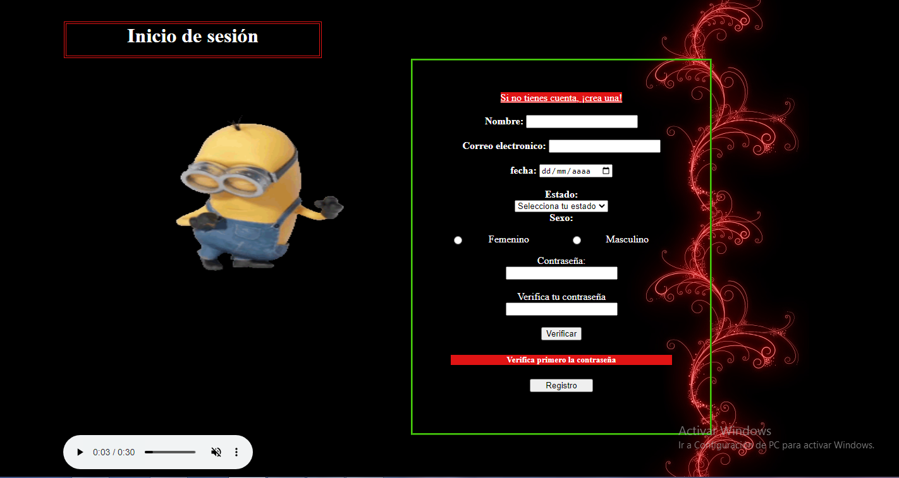
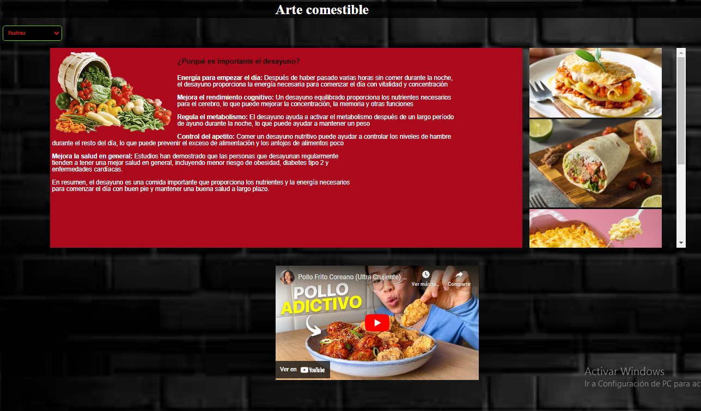
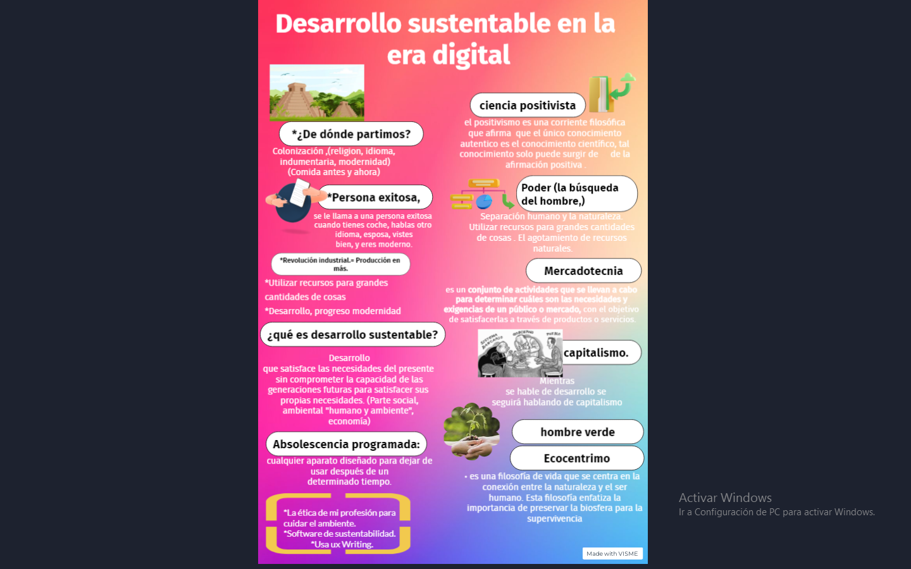
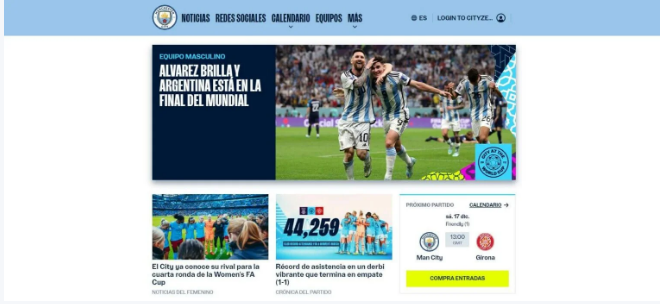
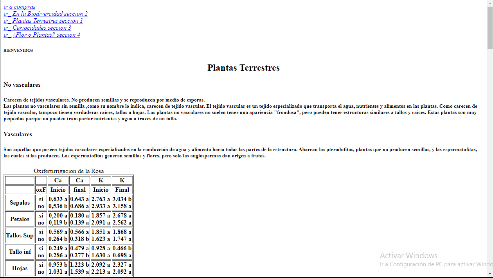
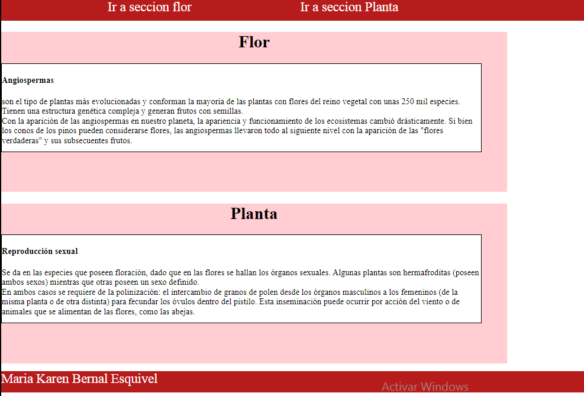
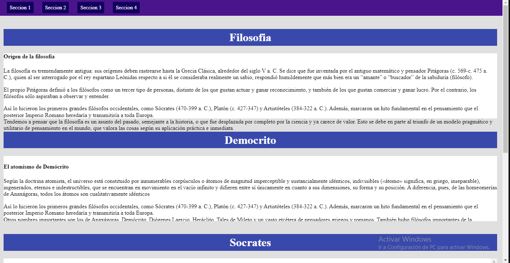
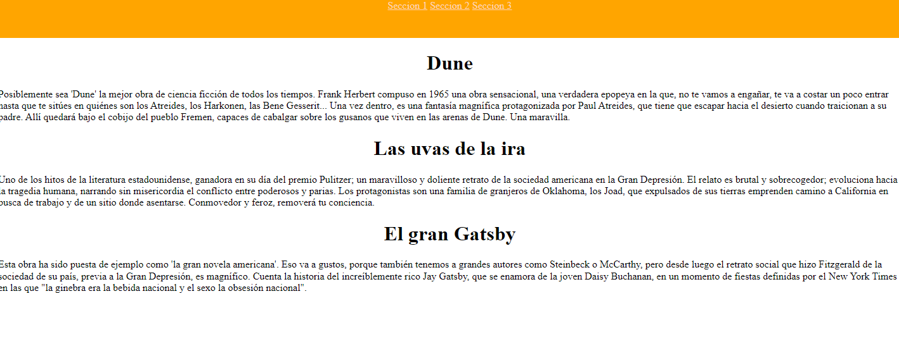
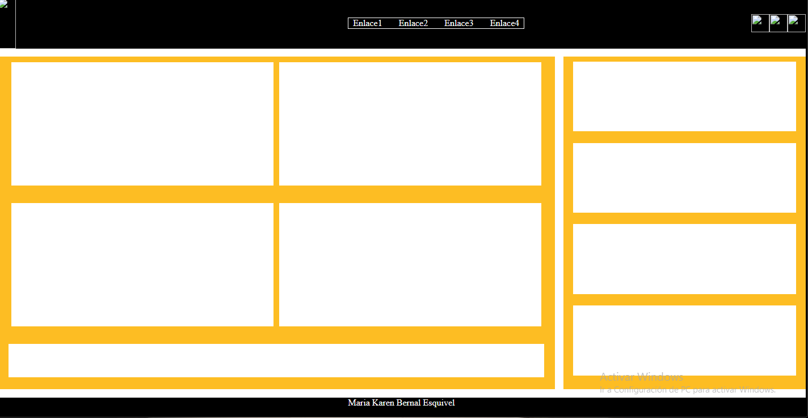
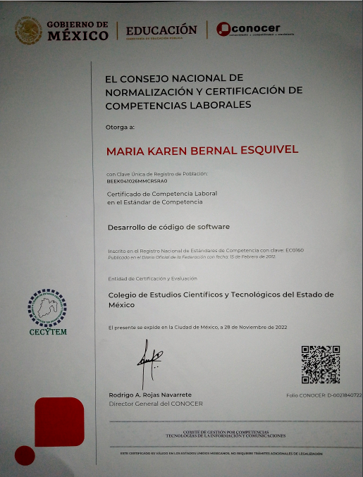
Contacto
Mi numero:
7228844939
correo:
elkarenag@gmail.com
bernalesquivel041@gmail.com
facebook:
Karen Polo
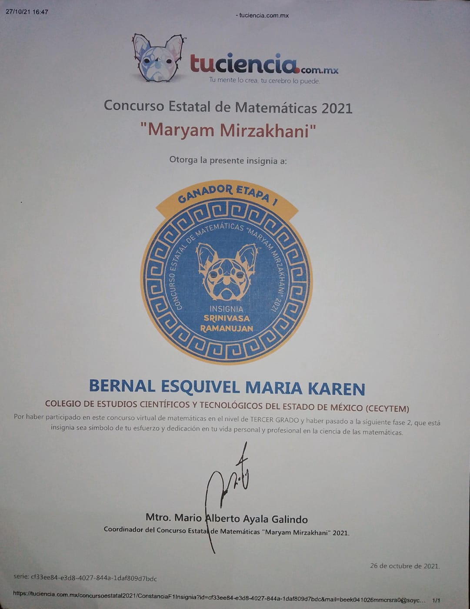